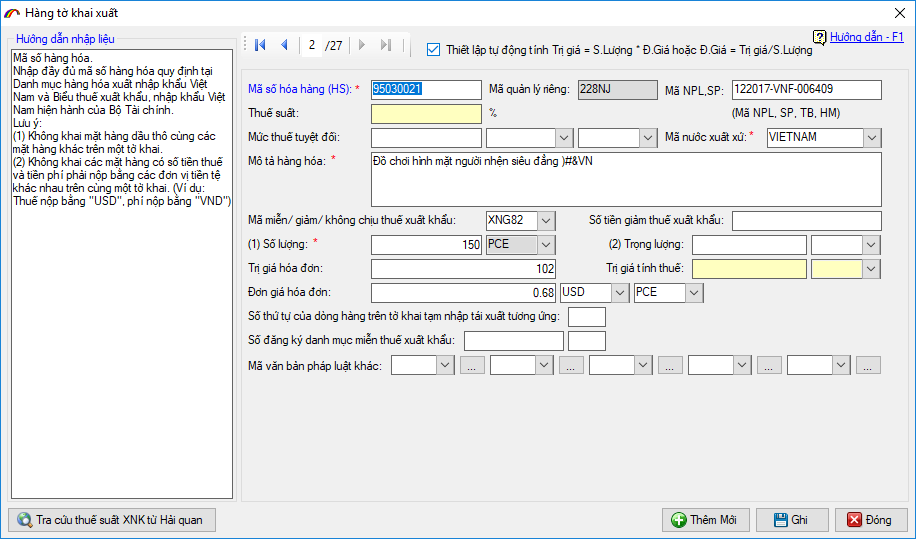
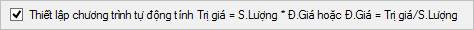

NHẬP DANH SÁCH HÀNG THEO TIÊU CHÍ ĐẦY ĐỦ CỦA VNACCS
Để nhập một dòng hàng bạn nhấn vào nút "Thêm mới" trên mục "Danh sách hàng", màn hình nhập chi tiết hiện ra như sau:

Trên màn hình nhập chi tiết hàng bạn thấy có rất nhiều chỉ tiêu, đây là tất cả các chỉ tiêu được thiết kế theo chuẩn của VNACCS bạn chỉ cần quan tâm đến các chỉ tiêu thông thường giống như các cột dữ liệu trên danh sách hàng mà đã hướng dẫn trong cách nhập dòng hàng theo cách thứ nhất (nhập hàng trực tiếp trên danh sách).
Bạn nhập lần lượt các chỉ tiêu của dòng hàng theo hướng dẫn nhập liệu, lưu ý ô "Thuế suất" và ô "Trị giá tính thuế" thông thường người khai không phải nhập mà hệ thống sẽ tự động trả về giống như phần giải thích khi nhập theo danh sách dòng hàng ở trên.
Mặc định khi bạn nhập vào các chỉ tiêu số lượng, đơn giá phần mềm sẽ tự động tính trị giá hoặc nhập vào số lượng , trị giá phần mềm sẽ tự động tính đơn giá. Nếu muốn nhập theo cách tính riêng của mình (phần mềm không tự tính) thì bạn bỏ chọn đánh dấu mục:

Bản quyền © thuộc về Công ty TNHH Phát triển công nghệ Thái Sơn